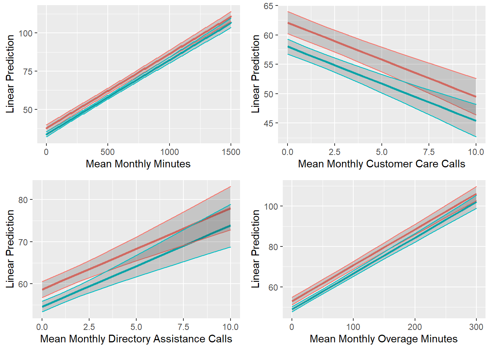
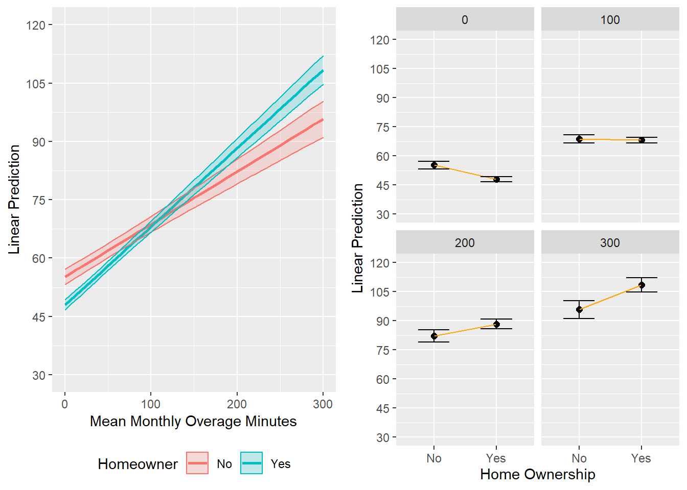
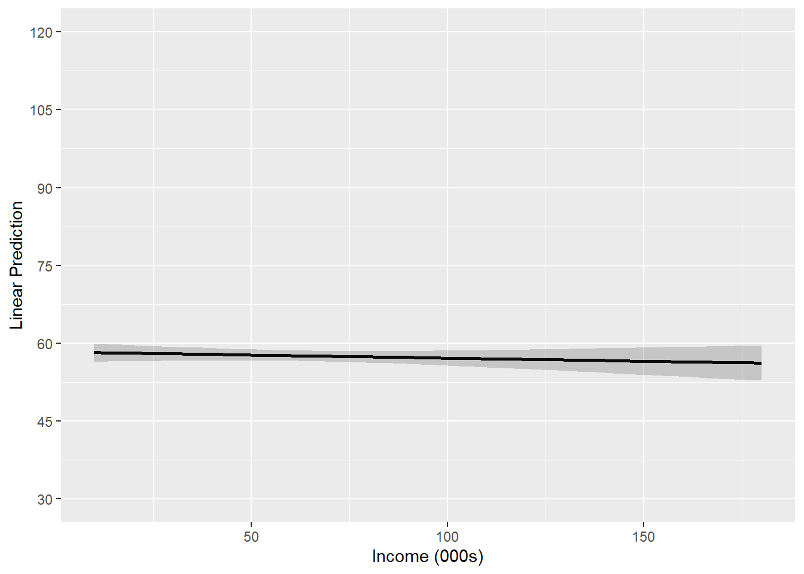
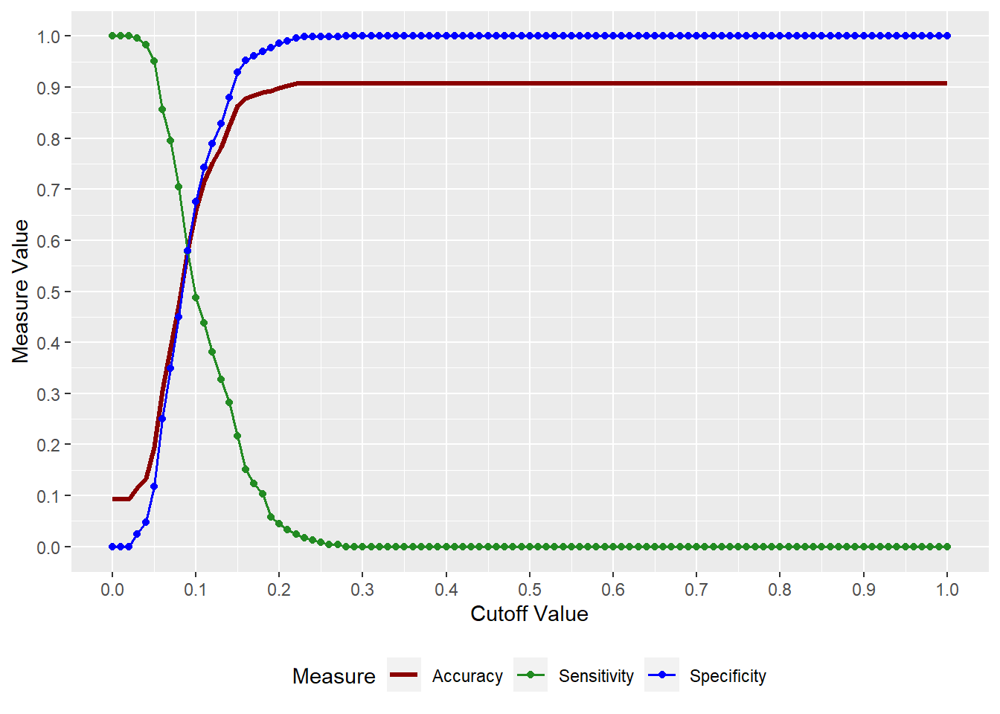
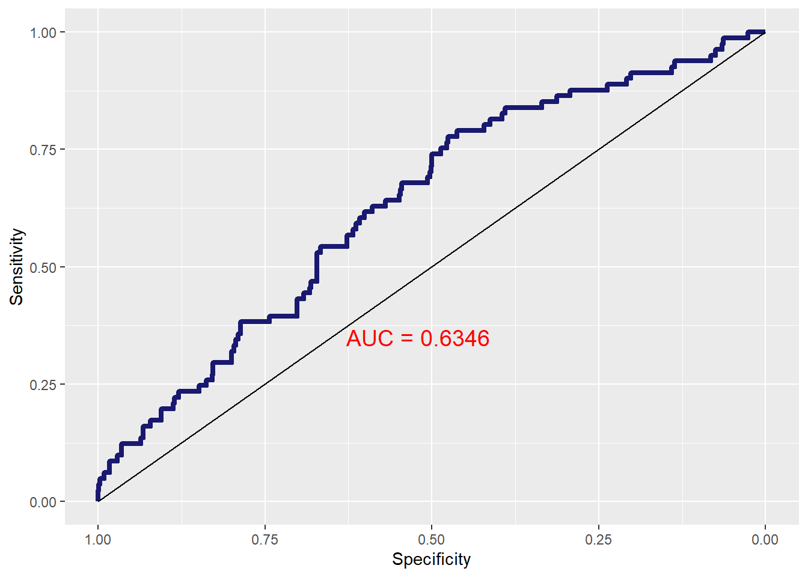
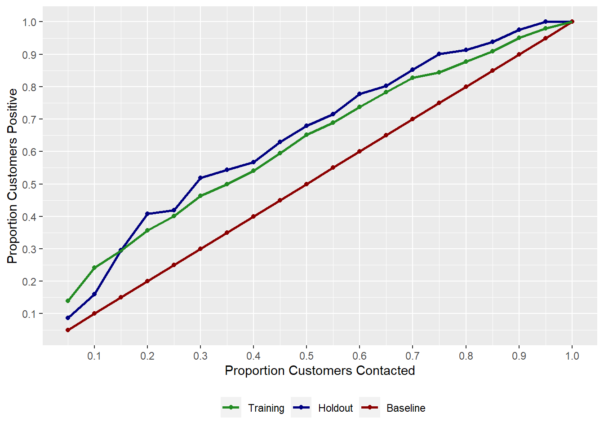
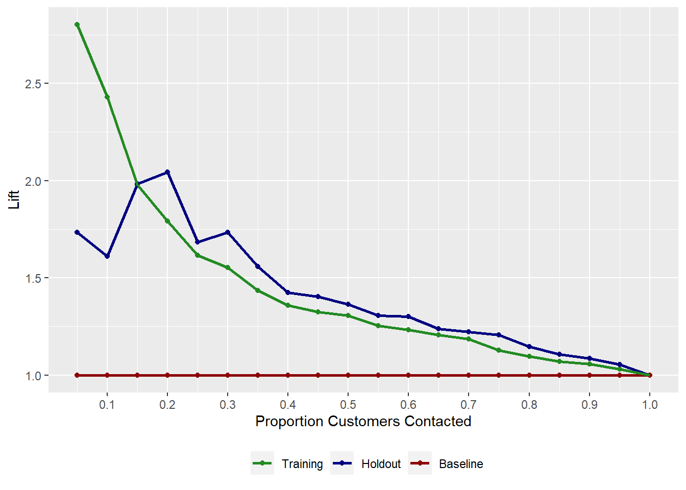

Topic 4 Targeting and Retaining Customers
4.1 R Packages and Datasets for Topic 4
library(cowplot) # Arrange plots in grid
library(ggplot2) # Advanced graphing capabilities
library(tidyr) # Easier programming
library(GGally) # Scatterplot matrix
library(flextable) # Better HTML Tables
library(htmlTable) # Better HTML Tables
library(jtools) # Concise regression results
library(dplyr) # Easier programming
library(caret) # Create data partitions
library(MKT4320BGSU)
load("Topic04/bankmktg.rdata")
load("Topic04/telecom.rdata")4.2 Targeting Customers
- One-to-One Marketing
- Time consuming
- Costly
- Mass Marketing
- Customer needs not being met
- Target Marketing
- Market to those likely to…
4.2.1 Goal
Target customers with the highest likelihood of a favorable outcome using explanatory variables
- Outcome variable could be:
- Purchase
- Sales
- Costs
- Profitability
- CLV
- Explanatory variables could be:
- Demographics
- Behaviors
- Usage
- Lifestyles
The outcome variable will dictate the type of analysis we can perform
- Continuous outcome variables have a meaningful magnitude
- Use linear regression
- Categorical outcome variables do not have a meaningful magnitude
- Use logistic regression
4.3 Retaining Customers
Importance of retention:
Reducing defections \(5\%\) boosts profits \(25\%\) to \(85\%\). — Frederick F. Reichheld and W. Earl Sasser, Jr.
4.4 Targeting Customers (Linear Regression) Example
4.4.1 Overview
- Customer revenue, usage, and demographics for a cell phone provider
- DV:
- Mean monthly revenue (prior 6 months),
avg6rev
- Mean monthly revenue (prior 6 months),
- IVs:
- Mean monthly minutes (prior 6 months),
avg6mou - Mean monthly customer care calls,
cc - Mean monthly directory assistance calls,
da - Mean monthly overage minutes,
ovrmou - Household income (dollars),
income - Own home (Yes; No),
own
- Mean monthly minutes (prior 6 months),
4.4.2 Summarize Data
- Useful to examine data prior to specifying the model
- Summary Statistics
Table 4.1: Summary Statistics (R code)
Variable N Mean Std. Dev. Min Pctl. 25 Pctl. 75 Max avg6rev 2382 57 45 2 33 68 726 avg6mou 2382 467 487 0 143 616 5321 cc 2382 1.5 3.8 0 0 1 63 da 2382 0.8 2.1 0 0 0.74 48 ovrmou 2382 41 105 0 0 36 2239 income 2382 64 36 10 38 83 180 own 2382 … No 709 30% … Yes 1673 70% - Scatterplot Matrix (with Correlations)
)](_main_files/figure-html/t4scatmat01-1.png)
Figure 4.1: Scatterplot Matrix with Correlations (R code)
- Summary Statistics
4.4.3 Model Specification
- Goal: Determine what behaviors and demographics are associated with high revenue customers
- IVs are expected to be ones that are related to revenue
- Expect an interaction between home ownership and overage minutes
- Model: \[\begin{align} avg6rev=\alpha + &\beta_1avg6mou + \beta_2cc + \\ &\beta_3da+\beta_4income + \\ &\beta_5ovrmou+\beta_6own + \beta_7(ovrmou\times own) \end{align}\]
4.4.4 Model Interpretation
4.4.4.1 Results
Call:
lm(formula = avg6rev ~ avg6mou + cc + da + income + ovrmou *
own, data = telecom)
Residuals:
Min 1Q Median 3Q Max
-114.914 -10.544 -1.583 7.495 286.012
Coefficients:
Estimate Std. Error t value Pr(>|t|)
(Intercept) 33.741596 1.436152 23.494 < 2e-16 ***
avg6mou 0.048613 0.001366 35.598 < 2e-16 ***
cc -1.331792 0.149055 -8.935 < 2e-16 ***
da 1.894769 0.268001 7.070 2.03e-12 ***
income -0.011922 0.014251 -0.837 0.403
ovrmou 0.135095 0.008707 15.516 < 2e-16 ***
ownYes -7.235480 1.206716 -5.996 2.33e-09 ***
ovrmou:ownYes 0.066355 0.010098 6.571 6.11e-11 ***
---
Signif. codes: 0 '***' 0.001 '**' 0.01 '*' 0.05 '.' 0.1 ' ' 1
Residual standard error: 24.53 on 2374 degrees of freedom
Multiple R-squared: 0.7053, Adjusted R-squared: 0.7044
F-statistic: 811.5 on 7 and 2374 DF, p-value: < 2.2e-16\[\begin{align} \hat{avg6rev} = 33.742 + &.049avg6mou-1.332cc + \\ &1.895da - .013income + \\ &.135ovrmou - 7.235own + 0.066(ovrmou\times own) \end{align}\]
4.4.4.2 Testing Overall Model Significance
- Relationship between DV and combined effects of IVs
- \(H_0: \text{all }\beta_k=0\) vs. \(H_a: \text{at least one }\beta_k\ne0\)
- Use F-statistic to test
- Conclusion: With a F-statistic of \(811.5\) and a \(p<.001\), we conclude that at least one \(\beta_k\) is significant
4.4.4.3 Assessing overall model fit
- How much variation in the DV is explained by the model
- Use \(R^2\) to assess
- Use Adjusted \(R^2\) to compare models
- Conclusion: Based on the \(R^2\), about \(70\%\) of the variance in
avg6revis explained by the model
4.4.4.4 Interpret Individual IVs
Relationship between DV and each IV
\(H_0: \beta_k=0\) vs. \(H_a: \beta_k\ne0\)
Interpret significant relationships
avg6mou- With \(p<.001\),
avg6mouhas a significant effect onavg6rev. - A one unit increase in
avg6mouis predicted to increaseavg6revby \(.049\) units.
- With \(p<.001\),
cc- With \(p<.001\),
cchas a significant effect onavg6rev. - A one unit increase in
ccis predicted to decreaseavg6revby \(1.332\) units.
- With \(p<.001\),
da- With \(p<.001\),
dahas a significant effect onavg6rev. - A one unit increase in
dais predicted to increaseavg6revby \(1.895\) units.
- With \(p<.001\),
ovrmouandowninteraction- With \(p<.001\), the effect of
ovrmouonavg6revis significantly different based onown. - When the customer owns their home, a one unit increase in
ovrmouis predicted to increaseavg6revby \(.201\) units. - When the customer does notown their home, a one unit increase in
ovrmouis predicted to increaseavg6revby \(.135\) units.
- With \(p<.001\), the effect of
Sometimes helps to visually examine the IVs for interpretation
Plots can show predicted DV at different levels of IVs
Figure 4.2: Margin Plots for Significant IVs (No Interaction) (R code)
Figure 4.3: Margin Plots for Interaction (R code)
Figure 4.4: Margin Plots for Insignificant IV (R code)
Examine deciles of predicted values by the IVs
- Split sample into 10 groups based on predicted DV
- Look at mean values of IVs for each decile
Table 4.3: IVs by Predicted Deciles (R code)
yhat.dec
avg6rev
avg6mou
cc
da
ovrmou
income
own
1
140.89496
1,445.20588
3.4929972
3.21853993
233.6628151
62.11214
0.5756303
2
79.25630
879.62185
2.5308123
1.59765756
72.0213585
68.32170
0.5672269
3
66.10504
658.82353
2.3319328
0.98722689
45.0808824
66.21007
0.5924370
4
54.00000
479.50420
1.1386554
0.63122899
24.7016807
66.72857
0.5588235
5
49.58403
376.96639
0.9621849
0.53243697
16.0875350
65.25383
0.6680672
6
45.59664
291.69748
0.9579832
0.38719538
10.0735294
63.87873
0.6428571
7
39.99160
224.22269
0.9705882
0.27557773
4.6803221
62.53975
0.6890756
8
36.80252
154.69748
0.7086835
0.20694328
2.4044118
58.18578
0.7478992
9
32.93724
110.35146
0.5662483
0.15429916
1.9731520
60.23379
0.9874477
10
28.66109
51.28033
1.2803347
0.04556485
0.7447699
61.95818
0.9916318
4.4.5 Conclusion
Recall our Goal:
Determine what behaviors and demographics are associated with high revenue customers
What did we learn?
- We can identify our highest revenue customers by examining
avg6mou,cc,da,ovrmouandown - Our highest revenue customers consumer over \(1000\) minutes per month and have over \(200\) overage minutes per month
- More directory assistance calls and fewer customer care calls are associated with higher revenue
4.5 Targeting Customers (Logistic Regression)
4.5.1 Overview
- Bank marketing data for customers of a bank
- DV:
- Open term deposit account,
response
- Open term deposit account,
- IVs:
- Age,
age - Average Yearly Balance,
balance - Housing Loan (Yes, No),
housing - Personal Loan (Yes, No),
loan - Married (Yes, No),
married
- Age,
- Predict current customers likely to buy
- Use training (75%) and holdout (25%) samples
4.5.2 Estimation Results
Call:
glm(formula = response ~ age + balance + housing + loan + married,
family = "binomial", data = train)
Coefficients:
Estimate Std. Error z value Pr(>|z|)
(Intercept) -2.42502380 0.28108855 -8.627 < 2e-16 ***
age 0.02063143 0.00658090 3.135 0.00172 **
balance -0.00001342 0.00002360 -0.569 0.56962
housingYes -0.57512112 0.13736995 -4.187 0.0000283 ***
loanYes -0.67663138 0.22339652 -3.029 0.00245 **
marriedYes -0.57891627 0.14211504 -4.074 0.0000463 ***
---
Signif. codes: 0 '***' 0.001 '**' 0.01 '*' 0.05 '.' 0.1 ' ' 1
(Dispersion parameter for binomial family taken to be 1)
Null deviance: 1629.3 on 2652 degrees of freedom
Residual deviance: 1580.0 on 2647 degrees of freedom
AIC: 1592
Number of Fisher Scoring iterations: 5Model p-value = 0.0000 McFadden's Pseudo-Rsquared = 0.0303Parameter | OR Est | p | 2.5% | 97.5% |
|---|---|---|---|---|
(Intercept) | 0.0885 | 0.0000 | 0.0510 | 0.1535 |
age | 1.0208 | 0.0017 | 1.0078 | 1.0341 |
balance | 1.0000 | 0.5696 | 0.9999 | 1.0000 |
housingYes | 0.5626 | 0.0000 | 0.4298 | 0.7365 |
loanYes | 0.5083 | 0.0025 | 0.3281 | 0.7876 |
marriedYes | 0.5605 | 0.0000 | 0.4242 | 0.7405 |
4.5.3 Overall Model Fit
Based on the likelihood ratio test with p-value < .0001, the overall model is significant
McFadden’s Pseudo-\(R^2\) of .030 means that the model explains only about 3% of variation between buyers/non-buyers
Classification Matrix for Training Sample
What’s the problem?
Table 4.5: Classification Matrix for Training Sample (R code)
Confusion Matrix and Statistics Reference Prediction No Yes No 2409 244 Yes 0 0 Accuracy : 0.908 95% CI : (0.8964, 0.9188) No Information Rate : 0.908 P-Value [Acc > NIR] : 0.517 Kappa : 0 Mcnemar's Test P-Value : <2e-16 Sensitivity : 0.00000 Specificity : 1.00000 Pos Pred Value : NaN Neg Pred Value : 0.90803 Prevalence : 0.09197 Detection Rate : 0.00000 Detection Prevalence : 0.00000 Balanced Accuracy : 0.50000 'Positive' Class : Yes PCC = 83.30%Sensitivity/Specificity Plot
Figure 4.5: Sensitivity/Specificity Plot for Training Sample (R code)
Classificaiton Matrix for Holdout Sample
Table 4.6: Classification Matrix for Training Sample with 0.1 Cutoff (R code)
Confusion Matrix and Statistics Reference Prediction No Yes No 1628 125 Yes 781 119 Accuracy : 0.6585 95% CI : (0.6401, 0.6765) No Information Rate : 0.908 P-Value [Acc > NIR] : 1 Kappa : 0.074 Mcnemar's Test P-Value : <2e-16 Sensitivity : 0.48770 Specificity : 0.67580 Pos Pred Value : 0.13222 Neg Pred Value : 0.92869 Prevalence : 0.09197 Detection Rate : 0.04485 Detection Prevalence : 0.33924 Balanced Accuracy : 0.58175 'Positive' Class : Yes PCC = 83.30%Classification Matrix for Holdout Sample
- Results very similar for holdout sample
Table 4.7: Classification Matrix for Holdout Sample with 0.1 Cutoff (R code)
Confusion Matrix and Statistics Reference Prediction No Yes No 544 37 Yes 258 44 Accuracy : 0.6659 95% CI : (0.6337, 0.697) No Information Rate : 0.9083 P-Value [Acc > NIR] : 1 Kappa : 0.0995 Mcnemar's Test P-Value : <2e-16 Sensitivity : 0.54321 Specificity : 0.67830 Pos Pred Value : 0.14570 Neg Pred Value : 0.93632 Prevalence : 0.09173 Detection Rate : 0.04983 Detection Prevalence : 0.34202 Balanced Accuracy : 0.61076 'Positive' Class : Yes PCC = 83.34%ROC Curve for Holdout Sample
- Area between \(.5\) and \(.7\) suggests poor model fit
Figure 4.6: ROC Curve for Test/Holdout Sample (R code)
4.5.4 Interpreting Coefficients
ageis positive (\(OR>1\)) and significant (\(p=.0017\))- \(1\) year increase in age increases odds of buying by a factor of \(1.021\) (or odds of buying increase by \(2.1\%\))
marriedis negative (\(OR<1\)) and significant (\(p<.0001\))- Being married decreases odds of buying by factor of \(.56\) (or odds of buying decrease by \(44\%\))
housingis negative (\(OR<1\)) and significant (\(p<.0001\))- Having a home loan decreases odds of buying by factor of \(.56\) (or odds of buying decrease by \(44\%\))
loanis negative (\(OR<1\)) and significant (\(p=.0025\))- Having a personal loan decreases odds of buying by factor of \(.50\) (or odds of buying decrease by \(50\%\))
4.5.5 Interpreting Coefficients Visually
Figure 4.7: Margin Plots for Significant IVs (R code)
4.5.6 Gain Chart
Contacting top \(20\%\) of predicted buyers yields about \(40\%\) of actual buyers
Contacting top \(30\%\) of predicted buyers yields about \(52\%\) of actual buyers
Figure 4.8: Gain Chart (R code)
4.5.7 Lift Chart
- Contacting top \(20\%\) of predicted buyers provides a lift of about \(2\)

Figure 4.9: Lift Chart (R code)
4.6 Suggested Readings
- Marketing Data Science (2015). Miller, Thomas W.
- BGSU Library Link:
http://maurice.bgsu.edu:2083/record=b41416968~S0 - eBook through BGSU Library:
https://learning.oreilly.com/library/view/marketing-data-science/9780133887662/?ar=
Note: Might need to create an account; select “Not Listed. Click here” from the “Select your institution” drop down box. Use your BGSU email to create the account. - Chapter 3: Targeting Current Customers
- BGSU Library Link:
4.7 R Code
Figure 4.1
# Need to detach package 'cowplot' to prevent an error
detach("package:cowplot", unload = TRUE)
ggpairs(telecom[,1:6], # Dataset
lower=list(continuous=
wrap("smooth",
method="lm",
se=FALSE, # Add fit line
color="midnightblue")), # Set dot color
diag=list(continuous="blankDiag")) # Set diagonals to be blank
# Reload 'cowplot'
library(cowplot)Figure 4.2
# Use package 'effects'
library(effects)
# Create data frame of values to be plotted for 'avg6mou' as focal
a6.p <- data.frame(predictorEffect("avg6mou", target,
focal.levels=seq(0,1500,30)))
# Create plot and assign to p1
p1 <- a6.p %>%
ggplot(aes(x=avg6mou, y=fit)) +
geom_line(size=1) +
geom_ribbon(aes(ymin=lower, ymax=upper), alpha=0.2) +
labs(x="Mean Monthly Minutes", y="Linear Prediction") +
scale_y_continuous(limits=c(30,120), breaks=seq(30,120,15))
# Repeat for other Significant IVs
cc.p <- data.frame(predictorEffect("cc", target,
focal.levels=seq(0,10,.2)))
p2 <- cc.p %>%
ggplot(aes(x=cc, y=fit)) +
geom_line(size=1) +
geom_ribbon(aes(ymin=lower, ymax=upper), alpha=0.2) +
labs(x="Mean Monthly Customer Care Calls", y="Linear Prediction") +
scale_y_continuous(limits=c(30,120), breaks=seq(30,120,15))
da.p <- data.frame(predictorEffect("da", target,
focal.levels=seq(0,10,.2)))
p3 <- da.p %>%
ggplot(aes(x=da, y=fit)) +
geom_line(size=1) +
geom_ribbon(aes(ymin=lower, ymax=upper), alpha=0.2) +
labs(x="Mean Monthly Directory Assistance Calls", y="Linear Prediction") +
scale_y_continuous(limits=c(30,120), breaks=seq(30,120,15))
#Arrange in grid using 'cowplot'
plot_grid(p1, p2, p3, nrow=2)Figure 4.3
om.p <- data.frame(predictorEffect("ovrmou", target,
focal.levels=seq(0,300,6)))
p4 <- om.p %>%
ggplot(aes(x=ovrmou, y=fit, color=own, fill=own)) +
geom_line(size=1) +
geom_ribbon(aes(ymin=lower, ymax=upper), alpha=0.2) +
labs(x="Mean Monthly Overage Minutes", y="Linear Prediction",
color="Homeowner", fill="Homeowner") +
scale_y_continuous(limits=c(30,120), breaks=seq(30,120,15)) +
theme(legend.position = "bottom")
own.p <- data.frame(predictorEffect("own", target,
xlevels=list(ovrmou=seq(0,300,100))))
p5 <- own.p %>%
ggplot(aes(x=own, y=fit, group=1)) +
geom_point(size=2) +
geom_line(color="orange") +
geom_errorbar(aes(ymin=lower, ymax=upper), width=.5) +
facet_wrap(~ovrmou) +
labs(x="Home Ownership", y="Linear Prediction") +
scale_y_continuous(limits=c(30,120), breaks=seq(30,120,15))
plot_grid(p4, p5, nrow=1)Figure 4.4
# Create data frame of values to be plotted for 'avg6mou' as focal
inc.p <- data.frame(predictorEffect("income", target))
# Create plot
inc.p %>%
ggplot(aes(x=income, y=fit)) +
geom_line(size=1) +
geom_ribbon(aes(ymin=lower, ymax=upper), alpha=0.2) +
labs(x="Income (000s)", y="Linear Prediction") +
scale_y_continuous(limits=c(30,120), breaks=seq(30,120,15))Figure 4.7
age.p <- data.frame(predictorEffect("age", tgt.log))
p6 <- age.p %>%
ggplot(aes(x=age, y=fit)) +
geom_line(size=1) +
geom_ribbon(aes(ymin=lower, ymax=upper), alpha=0.2) +
labs(x="Age", y="Pr(Response)") +
scale_y_continuous(limits=c(0,.3))
mar.p <- data.frame(predictorEffect("married", tgt.log))
p7 <- mar.p %>%
ggplot(aes(x=married, y=fit, group=1)) +
geom_point(size=4) +
geom_line(color="orange") +
geom_errorbar(aes(ymin=lower, ymax=upper), width=.5) +
labs(x="Married") +
theme(axis.title.y=element_blank()) +
scale_y_continuous(limits=c(0,.3))
ln.p <- data.frame(predictorEffect("loan", tgt.log))
p8 <- ln.p %>%
ggplot(aes(x=loan, y=fit, group=1)) +
geom_point(size=4) +
geom_line(color="orange") +
geom_errorbar(aes(ymin=lower, ymax=upper), width=.5) +
labs(x="Personal Loan", y="Pr(Response)") +
scale_y_continuous(limits=c(0,.3))
hl.p <- data.frame(predictorEffect("housing", tgt.log))
p9 <- hl.p %>%
ggplot(aes(x=housing, y=fit, group=1)) +
geom_point(size=4) +
geom_line(color="orange") +
geom_errorbar(aes(ymin=lower, ymax=upper), width=.5) +
labs(x="Housing Loan") +
theme(axis.title.y=element_blank()) +
scale_y_continuous(limits=c(0,.3))
plot_grid(p6, p7, p8, p9, nrow=2)Figure 4.8
Figure 4.9
Table 4.1
Table 4.2
Table 4.3
telecom %>%
cbind(., yhat=fitted(target)) %>% # Append fitted values to data
mutate(yhat.dec=11-ntile(yhat, 10), # Create deciles, but reverse order
own=as.numeric(own)-1) %>% # Covert own to 1=yes, 0=no
group_by(yhat.dec) %>% # Group by decile
summarise(across(avg6rev:own,
~mean(.x, na.rm=TRUE))) %>% # Calculate mean of each IV
flextable() # Nice tableTable 4.4
# Use 'caret' package to create training and test/holdout samples
library(caret)
# This will create two separate dataframes: train and test
set.seed(9999)
inTrain <- createDataPartition(y=bankmktg$response, p=.75, list=FALSE)
train <- bankmktg[inTrain,]
test <- bankmktg[-inTrain,]
# Estimate using training sample
tgt.log <- glm(response ~ age + balance + default + housing + educ +
loan + married, data=train, family="binomial")
summary(tgt.log)
# Get p-value
p <- with(tgt.log, pchisq(null.deviance - deviance,
df.null-df.residual,
lower.tail=FALSE))
cat("Model p-value =",sprintf("%.4f",p),"\ ")
# Calculate McFadden's R-sq
Mrsq <- 1-tgt.log$deviance/tgt.log$null.deviance
cat("McFadden's Pseudo-Rsquared = ", round(Mrsq, digits=4))
flextable(or_table(tgt.log))